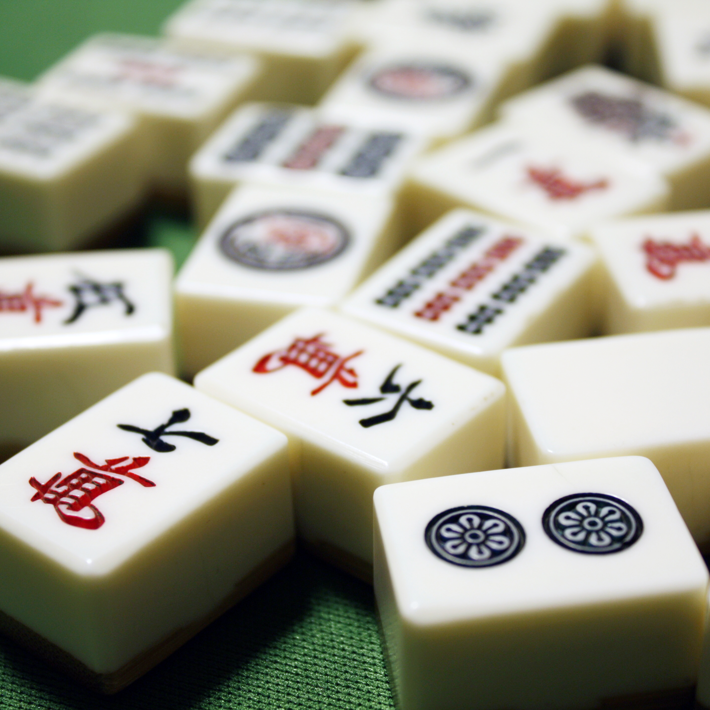

〈麻雀ってどんなゲーム？〉

3種の数字牌、7種の字牌を使って役を作るゲームで、大体は4人で四角い卓を囲んで遊びます。なるべく難易度の高い役（価値も高い）を作りながら、最終的に一番得点を稼いだプレイヤーが勝利となります。
東場、南場各4局の全8局を戦うことになりますが、ゲーム終了後の総得点数1位のプレイヤーが勝利するため、優勢のときは早めに局を終わらせる、劣勢の際は高い役で逆転を狙いにいくなど、大局を意識しておく必要があります。
〈使う牌の種類〉

萬子（マンズ、ワンズ）と呼ばれる。1から9までの数字で構成されている。各数字4枚しかない。赤ドラは「五萬」。順子（ジュンツ＝連番3枚）と刻子（コーツ＝同じ牌3枚）を作るときに使用できる。

筒子（ピンズ）と呼ばれる。1から9までの数字で構成されている。各数字4枚しかない。赤ドラは「五筒」。順子（ジュンツ＝連番3枚）と刻子（コーツ＝同じ牌3枚）を作るときに使用できる。
索子（ソーズ）と呼ばれる。1から9までの数字で構成されている。各数字4枚しかない。赤ドラは「五索」。順子（ジュンツ＝連番3枚）と刻子（コーツ＝同じ牌3枚）を作るときに使用できる。

風牌（フウハイ）と呼ばれる。東南西北の漢字で構成されている。各字4枚しかない。自分に割り当てられた方角、場の方角の牌を3枚集めるだけで役が成立する。刻子（コーツ＝同じ牌3枚）を作るときに使用できる。

三元牌（サンゲンパイ）と呼ばれる。白、發、中の漢字で構成されている。各字4枚しかない。同じ牌を3枚集めるだけで役が成立する。刻子（コーツ＝同じ牌3枚）を作るときに使用できる。
〈用語集〉
- 和了 （ホーラ）
- 役をつくってあがること。あがるときに他プレイヤーから牌をもらえばロン、自分で牌を引いてくるとツモになる。
- 放銃 （ホウチャン）
- 自分の捨て牌で他プレイヤーにあがられること。「振り込んだ」とも表現する。
- 聴牌 （テンパイ）
- あと1枚必要な牌があれば上がれる状態。立直（リーチ）を宣言できる。流局のときもペナルティがない。
- 不聴 （ノーテン）
- 流局のときに聴牌でない状態。ペナルティとして、聴牌しているプレイヤーに点棒を渡す必要がある。
- 振聴 （フリテン）
- 自分が捨てた牌でアガり待ちの状態をフリテンという。麻雀は自分が捨てた牌を他プレイヤーからもらってアガることはできない...。
- 単騎待ち (タンキ)
- アタマ（ペア）の片割れを待っている状態。
- 地獄待ち (ジゴク)
- 待っている牌がすでに2枚場に出ている状態。自分が1枚持っているので、あとは場に1枚しかない。
- 両面待ち (リャンメン)
- 順子の両端を待っている状態。2種の牌のどちらかでアガれるので和了の可能性が高い。平和（ピンフ）の成立条件。
- 多面待ち (リャンメン)
- 順子の両端を待っている状態。2種の牌のどちらかでアガれるので和了の可能性が高い。
- 間張待ち (カンチャン)
- 順子の真ん中を待っている状態。
- 辺張待ち (ペンチャン)
- 順子の片側を待っている状態。
- 頭 （アタマ）
- 同じ柄の牌2枚。これがないとアガれない。
- 暗刻 （アンコー）／明刻（ミンコー）
- 鳴かずにつくった刻子（同じ柄の牌3枚）／鳴いてつくった刻子（同じ柄の3つ）。
- 暗槓 （アンカン）／明槓（ミンカン）
- 鳴かずにつくった槓子（同じ柄の牌4枚）／鳴いてつくった槓子（同じ柄の4つ）。いずれにしてもドラが増える。